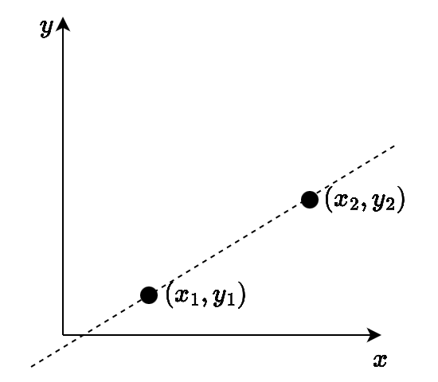
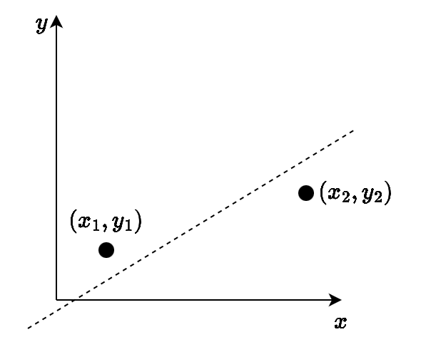
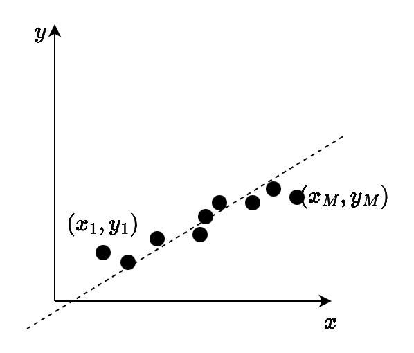
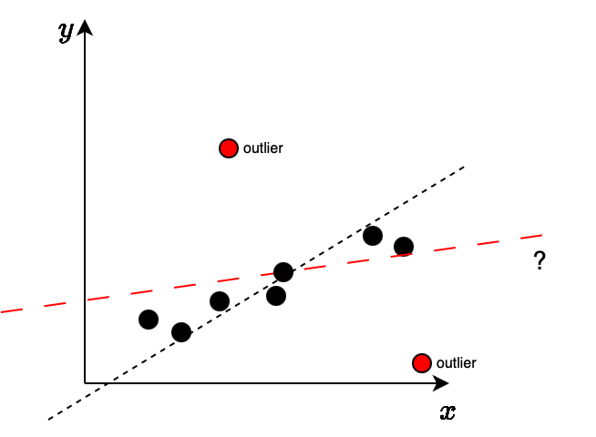

ECT/UFRN

Como é o modelo matemático? Quais são os seus parâmetros?
y_i = ax_i + b
Quantos pontos são precisos para estimar este modelo?
Pelo menos dois pontos são necessários
E no caso em que é adicionado ruído às coordenadas dos pontos da reta?
Observe que neste caso, a reta verdadeira (computada com x_i, y_i) deve ser aproximada da reta computada com os dados com ruído \hat{x}_i, \hat{y}_i
Como proceder?

E no caso em que é adicionado ruído às coordenadas dos pontos da reta?
Observe que neste caso, a reta verdadeira (computada com x_i, y_i) deve ser aproximada da reta computada com os dados com ruído \hat{x}_i, \hat{y}_i
Como proceder?
Método dos Mínimos Quadrados: computa os parâmetros do modelo de forma a minimizar a soma dos erros quadráticos
O Método dos Mínimos Quadrados se beneficia de uma maior quantidade de pontos:

Para que o método dos Mínimos Quadrados estime o modelo correto na presença de dados corrompidos por ruído, uma premissa deve ser respeitada:
O ruído que afeta os dados \hat{x}_i, \hat{y}_i é assumido com distribuição normal

RANSAC: RANdom SAmple Consensus (consenso da amostra aleatória):
Permite que um modelo matemático seja estimado de forma robusta:
Ideia do algoritmo:
Ao final:
Dada uma correspondência entre pontos \mathbf{x} \leftrightarrow \mathbf{x}', uma medida de distância entre os pontos e a homografia H pode ser computada da seguinte forma:
d_{homog}(\mathbf{x}, \mathbf{x}') = d(\mathbf{x}, H^{-1}\mathbf{x}')^2 + d(H\mathbf{x}, \mathbf{x}')^2,
onde d(.,.) é a distância Euclidiana entre pontos.
O algoritmo RANSAC depende de 3 parâmetros:
O limiar do erro t no RANSAC:
Para a homografia:
Observe que, com um conjunto contendo M correspondências e um modelo que precisa de K delas para ser estimado:
O número de amostras N pode ser estimado para garantir com uma probabilidade p = 99\% que pelo menos uma amostra s estará livre de outliers:
N = \frac{\log(1 - p)}{\log(1 - (1 - \epsilon)^s)}
| Tamanho da amostra s | 5% | 10% | 20% | 25% | 30% | 40% | 50% |
|---|---|---|---|---|---|---|---|
| 2 | 2 | 3 | 5 | 6 | 7 | 11 | 17 |
| 3 | 3 | 4 | 7 | 9 | 11 | 19 | 35 |
| 4 | 3 | 5 | 9 | 13 | 17 | 34 | 72 |
| 5 | 4 | 6 | 12 | 17 | 26 | 57 | 146 |
| 6 | 4 | 7 | 16 | 24 | 37 | 97 | 293 |
| 7 | 4 | 8 | 20 | 33 | 54 | 163 | 588 |
| 8 | 5 | 9 | 26 | 44 | 78 | 272 | 1177 |
Para o tamanho T do conjunto consenso:
Na prática, utiliza-se um valor de T adaptativo:
O RANSAC pode ser utilizado para estimar uma homografia que relaciona as duas imagens:
Nesta aula – RANSAC:
Visão Robótica - PPGEMECA/UFRN